l2hmc Example: 2D U(1)

This notebook will (attempt) to walk through the steps needed to successfully instantiate and “run” an experiment.
For this example, we wish to train the L2HMC sampler for the 2D U(1) lattice gauge model with Wilson action:
S_{\beta}(n) = \beta \sum_{n}\sum_{\mu<\nu}\mathrm{Re}\left[1 - U_{\mu\nu}(n) \right]
This consists of the following steps:
Build an
Experimentby parsing our configuration objectTrain our model using the
Experiment.train()methodEvaluate our trained model
Experiment.evaluate(job_type='eval')Compare our trained models’ performance against generic HMC
Experiment.evaluate(job_type='hmc')
Evaluating Performance
We measure the performance of our model by comparing the tunneling rate \delta Q of our trained sampler to that of generic HMC.
Explicitly, the tunneling rate is given by:
\delta Q = \frac{1}{N_{\mathrm{chains}}}\sum_{\mathrm{chains}} \left|Q_{i+1} - Q_{i}\right|
where the difference is between subsequent states in a chain, and the sum is over all N chains (each being ran in parallel, independently).
Since our goal is to generate independent configurations, the more our sampler tunnels between different topological sectors (tunneling rate), the more efficient our sampler.
Imports / Setup
! nvidia-smi | tail --lines -7import os
devices = os.environ.get('CUDA_VISIBLE_DEVICES', None)
print(devices)
!getconf _NPROCESSORS_ONLN # get number of availble CPUsNone
256os.environ['TORCH_CPP_LOG_LEVEL'] = 'ERROR'
os.environ['AUTOGRAPH_VERBOSITY'] = '10'
!echo $CUDA_VISIBLE_DEVICESimport lovely_tensors as lt
lt.monkey_patch()
lt.set_config(color=False)# automatically detect and reload local changes to modules
%load_ext autoreload
%autoreload 2
# automatically detect and reload local changes to modules
%matplotlib inline
import matplotlib_inline
matplotlib_inline.backend_inline.set_matplotlib_formats('svg', 'retina')The autoreload extension is already loaded. To reload it, use:
%reload_ext autoreloadimport os
import warnings
os.environ['COLORTERM'] = 'truecolor'
warnings.filterwarnings('ignore')
# --------------------------------------
# BE SURE TO GRAB A FRESH GPU !
os.environ['CUDA_VISIBLE_DEVICES'] = '5'
!echo $CUDA_VISIBLE_DEVICES
# --------------------------------------5import yaml
import logging
from l2hmc.configs import CONF_DIR
rlog_yaml = CONF_DIR.joinpath('hydra', 'job_logging', 'rich_jupyter.yaml')
with rlog_yaml.open('r') as stream:
logconf = dict(yaml.safe_load(stream))
logging.config.dictConfig(logconf)
log = logging.getLogger()
log.setLevel('INFO')--------------------------------------------------------------------------
WARNING: There was an error initializing an OpenFabrics device.
Local host: thetagpu23
Local device: mlx5_0
--------------------------------------------------------------------------Using device: cuda
import torch
import opinionated
import seaborn as sns
import numpy as np
import lovely_tensors as lt
import matplotlib.pyplot as plt
import l2hmc.group.su3.pytorch.group as g
from pathlib import Path
from typing import Optional
from ezpz import setup_torch
#from l2hmc.utils.dist import setup_torch_distributed
from l2hmc.common import grab_tensor, print_dict
from l2hmc.configs import dict_to_list_of_overrides, get_experiment
from l2hmc.experiment.pytorch.experiment import Experiment, evaluate # noqa # noqa
from l2hmc.utils.plot_helpers import set_plot_style
from l2hmc.utils.history import BaseHistory
from l2hmc.utils.plot_helpers import ( # noqa
set_plot_style,
plot_scalar,
plot_chains,
plot_leapfrogs
)
os.environ['COLORTERM'] = 'truecolor'
PORT = np.random.randint(5000, 6000)
#SEED = np.random.randint(0, 2 ** 16)
SEED = 4351
log.critical(f'{SEED=}')
log.info(f'{PORT=}')
os.environ['MASTER_PORT'] = str(PORT)
#_ = setup_torch_distributed(backend='DDP', )
_ = setup_torch(backend='DDP', seed=SEED, port=PORT)
_ = (
torch.set_default_device('cuda')
if torch.cuda.is_available() else None
)
#torch.set_default_dtype(torch.bfloat16)
#_ = (
# torch.set_autocast_gpu_dtype(torch.bfloat16)
# if torch.cuda.is_available() else None
#)
set_plot_style()
plt.style.use(opinionated.STYLES['opinionated_min'])
sns.set_context('notebook', font_scale=1.25)Failed to download font: Source Sans Pro, skipping!
Failed to download font: Titillium WebRoboto Condensed, skipping!
2023-12-05 11:12:19.257964: I tensorflow/core/platform/cpu_feature_guard.cc:193] This TensorFlow binary is optimized with oneAPI Deep Neural Network Library (oneDNN) to use the following CPU instructions in performance-critical operations: SSE3 SSE4.1 SSE4.2 AVX AVX2 FMA
To enable them in other operations, rebuild TensorFlow with the appropriate compiler flags.[2023-12-05 11:12:22,359] [INFO] [real_accelerator.py:161:get_accelerator] Setting ds_accelerator to cuda (auto detect)
[2023-12-05 11:12:27][CRITICAL][747729381.py:32] - SEED=4351
[2023-12-05 11:12:27][INFO][747729381.py:33] - PORT=5249
[2023-12-05 11:12:27][INFO][dist.py:185] - Using DDP for distributed training
[2023-12-05 11:12:27][INFO][dist.py:162] - Caught MASTER_PORT:5249 from environment!
[2023-12-05 11:12:27][INFO][distributed_c10d.py:442] - Added key: store_based_barrier_key:1 to store for rank: 0
[2023-12-05 11:12:27][INFO][distributed_c10d.py:476] - Rank 0: Completed store-based barrier for key:store_based_barrier_key:1 with 1 nodes.
[2023-12-05 11:12:27][INFO][dist.py:240] - RANK: 0 / 0
import l2hmc
log.info(f'{l2hmc.__file__=}')[2023-12-05 11:12:28][INFO][1221488284.py:2] - l2hmc.__file__='/lus/grand/projects/DLHMC/foremans/locations/thetaGPU/projects/saforem2/l2hmc-qcd/src/l2hmc/__init__.py'
Initialize and Build Experiment objects:
- The
l2hmc.mainmodule provides a functionbuild_experiment:
def build_experiment(overrides: list[str]) -> tfExperiment | ptExperiment:
...which will:
- Load the default options from
conf/config.yaml - Override the default options with any values provided in
overrides - Parse these options and build an
ExperimentConfigwhich uniquely defines an experiment - Instantiate / return an
Experimentfrom theExperimentConfig. Depending onframework=pytorch|tensorflow:framework=pytorch->l2hmc.experiment.pytorch.Experimentframework=tensorflow->l2hmc.experiment.tensorflow.Experiment
>>> train_output = experiment.train()
>>> eval_output = experiment.evaluate(job_type='eval')
>>> hmc_output = experiment.evaluate(job_type='hmc')Overriding Defaults
Specifics about the training / evaluation / hmc runs can be flexibly overridden by passing arguments to the training / evaluation / hmc runs, respectively
import numpy as np
# ---- NOTE -----------------------------
# These don't NEED to be specified,
# they're just here for completeness.
# the defaults are in `conf/config.yaml`
# ----------------------------------------
DEFAULTS = {
'seed': 76043,
'precision': 'fp16',
'init_aim': False,
'init_wandb': False,
'use_wandb': False,
'restore': False,
'save': False,
'use_tb': False,
'dynamics': {
'nleapfrog': 4,
'nchains': 2048,
'eps': 0.05,
},
'conv': 'none',
'steps': {
'log': 20,
'print': 200,
'nepoch': 5000,
'nera': 1,
},
'annealing_schedule': {
'beta_init': 4.0,
'beta_final': 4.0,
},
}
outputs = {
'pytorch': {
'train': {},
'eval': {},
'hmc': {},
},
'tensorflow': {
'train': {},
'eval': {},
'hmc': {},
},
}from l2hmc.configs import dict_to_list_of_overrides
OVERRIDES = dict_to_list_of_overrides(DEFAULTS)
log.info('\n'.join(OVERRIDES))[2023-12-05 11:13:50][INFO][503454067.py:3] - seed=76043 precision=fp16 init_aim=False init_wandb=False use_wandb=False restore=False save=False use_tb=False dynamics.nleapfrog=4 dynamics.nchains=2048 dynamics.eps=0.05 conv=none steps.log=20 steps.print=200 steps.nepoch=5000 steps.nera=1 annealing_schedule.beta_init=4.0 annealing_schedule.beta_final=4.0
from l2hmc.__main__ import build_experiment
# Build PyTorch Experiment
ptExpU1 = build_experiment(
overrides=[
*OVERRIDES,
'framework=pytorch',
'backend=DDP',
]
)[2023-12-05 11:13:55][INFO][dist.py:185] - Using DDP for distributed training
[2023-12-05 11:13:55][INFO][dist.py:162] - Caught MASTER_PORT:5249 from environment!
[2023-12-05 11:13:55][INFO][dist.py:240] - RANK: 0 / 0
[2023-12-05 11:13:55][INFO][dist.py:226] - Caught MASTER_PORT:5249 from environment!
[2023-12-05 11:13:55][INFO][dist.py:226] - Caught MASTER_PORT:5249 from environment!
[2023-12-05 11:13:55][WARNING][trainer.py:467] - Using torch.float16 on cuda!
[2023-12-05 11:13:56][WARNING][trainer.py:467] - Using `torch.optim.Adam` optimizer
[2023-12-05 11:13:56][INFO][trainer.py:305] - num_params in model: 598344
[2023-12-05 11:13:56][WARNING][trainer.py:271] - logging with freq 20 for wandb.watch
# Build TensorFlow Experiment
import tensorflow as tf
tf.keras.mixed_precision.set_global_policy('mixed_float16')
tfExpU1 = build_experiment(
overrides=[
*OVERRIDES,
'framework=tensorflow',
'backend=horovod',
]
)[2023-12-05 11:14:05][INFO][device_compatibility_check.py:130] - Mixed precision compatibility check (mixed_float16): OK Your GPU will likely run quickly with dtype policy mixed_float16 as it has compute capability of at least 7.0. Your GPU: NVIDIA A100-SXM4-80GB, compute capability 8.0
[2023-12-05 11:14:05][INFO][dist.py:323] - RANK: 0 / 0
[2023-12-05 11:14:05][INFO][dist.py:325] - Using float32 precision
PyTorch
import time
from l2hmc.utils.history import BaseHistory, summarize_dict
import l2hmc.utils.live_plots as plotter
plt.rcParams['xaxis.labellocation'] = 'center'
plt.rcParams['yaxis.labellocation'] = 'center'
beta = 4.0
state = ptExpU1.trainer.dynamics.random_state(beta)state.x.devicedevice(type='cuda', index=0)Training
outputs['pytorch']['train'] = ptExpU1.trainer.train(
nera=1,
nepoch=5000,
beta=4.0,
# beta=[4.0, 4.25, 4.5, 4.75, 5.0],
)output:
[2023-12-05 11:14:13][INFO][trainer.py:108] - ┏━━━━━━━━━━━━━━━━━━━━━━━━━━━━━━┓
[2023-12-05 11:14:13][INFO][trainer.py:109] - ┃ ERA: 0 / 1, BETA: 4.000 ┃
[2023-12-05 11:14:13][INFO][trainer.py:110] - ┗━━━━━━━━━━━━━━━━━━━━━━━━━━━━━━┛
[2023-12-05 11:14:14][INFO][trainer.py:471] - Thermalizing configs @ 4.00 took 1.7203 s
[2023-12-05 11:14:15][INFO][trainer.py:1623] - era=0 epoch=0 tstep=1 dt=0.311 beta=4.000 loss=81.851 dQsin=0.006 dQint=0.002 energy=411.822 logprob=411.697 logdet=0.125 sldf=0.120 sldb=-0.107 sld=0.125 xeps=0.050 veps=0.050 acc=0.026 sumlogdet=0.003 acc_mask=0.026 plaqs=0.854 intQ=0.053 sinQ=0.037 lr=0.001
[2023-12-05 11:14:15][INFO][distributed.py:1140] - Reducer buckets have been rebuilt in this iteration.
[2023-12-05 11:15:18][INFO][trainer.py:1623] - era=0 epoch=200 tstep=201 dt=0.291 beta=4.000 loss=10.499 dQsin=0.076 dQint=0.011 energy=396.810 logprob=396.496 logdet=0.314 sldf=0.195 sldb=-0.154 sld=0.314 xeps=0.021 veps=0.022 acc=0.598 sumlogdet=-0.006 acc_mask=0.601 plaqs=0.863 intQ=0.056 sinQ=0.060 lr=0.001
[2023-12-05 11:16:19][INFO][trainer.py:1623] - era=0 epoch=400 tstep=401 dt=0.289 beta=4.000 loss=7.030 dQsin=0.099 dQint=0.014 energy=396.425 logprob=395.868 logdet=0.557 sldf=0.347 sldb=-0.310 sld=0.557 xeps=0.029 veps=0.030 acc=0.630 sumlogdet=-0.002 acc_mask=0.631 plaqs=0.864 intQ=0.047 sinQ=0.036 lr=0.001
[2023-12-05 11:17:22][INFO][trainer.py:1623] - era=0 epoch=600 tstep=601 dt=0.291 beta=4.000 loss=2.930 dQsin=0.130 dQint=0.023 energy=397.770 logprob=396.874 logdet=0.896 sldf=0.553 sldb=-0.487 sld=0.896 xeps=0.039 veps=0.040 acc=0.664 sumlogdet=-0.003 acc_mask=0.676 plaqs=0.864 intQ=0.035 sinQ=0.023 lr=0.001
[2023-12-05 11:18:25][INFO][trainer.py:1623] - era=0 epoch=800 tstep=801 dt=0.291 beta=4.000 loss=0.603 dQsin=0.154 dQint=0.029 energy=399.160 logprob=397.946 logdet=1.214 sldf=0.750 sldb=-0.663 sld=1.214 xeps=0.047 veps=0.050 acc=0.757 sumlogdet=-0.000 acc_mask=0.746 plaqs=0.863 intQ=0.030 sinQ=0.015 lr=0.001
[2023-12-05 11:19:29][INFO][trainer.py:1623] - era=0 epoch=1000 tstep=1001 dt=0.300 beta=4.000 loss=-0.085 dQsin=0.168 dQint=0.025 energy=398.964 logprob=397.578 logdet=1.386 sldf=0.858 sldb=-0.783 sld=1.386 xeps=0.052 veps=0.055 acc=0.814 sumlogdet=0.000 acc_mask=0.808 plaqs=0.864 intQ=0.010 sinQ=0.003 lr=0.001
[2023-12-05 11:20:34][INFO][trainer.py:1623] - era=0 epoch=1200 tstep=1201 dt=0.313 beta=4.000 loss=-1.749 dQsin=0.181 dQint=0.045 energy=399.484 logprob=397.867 logdet=1.617 sldf=1.003 sldb=-0.942 sld=1.617 xeps=0.062 veps=0.065 acc=0.814 sumlogdet=0.003 acc_mask=0.794 plaqs=0.863 intQ=-0.012 sinQ=-0.007 lr=0.001
[2023-12-05 11:21:38][INFO][trainer.py:1623] - era=0 epoch=1400 tstep=1401 dt=0.297 beta=4.000 loss=-2.117 dQsin=0.192 dQint=0.042 energy=399.738 logprob=397.874 logdet=1.864 sldf=1.158 sldb=-1.104 sld=1.864 xeps=0.072 veps=0.076 acc=0.832 sumlogdet=0.007 acc_mask=0.831 plaqs=0.864 intQ=-0.052 sinQ=-0.047 lr=0.001
[2023-12-05 11:22:41][INFO][trainer.py:1623] - era=0 epoch=1600 tstep=1601 dt=0.297 beta=4.000 loss=-3.168 dQsin=0.205 dQint=0.063 energy=401.640 logprob=399.423 logdet=2.218 sldf=1.373 sldb=-1.267 sld=2.218 xeps=0.085 veps=0.089 acc=0.813 sumlogdet=-0.000 acc_mask=0.815 plaqs=0.863 intQ=0.031 sinQ=0.022 lr=0.001
[2023-12-05 11:23:44][INFO][trainer.py:1623] - era=0 epoch=1800 tstep=1801 dt=0.297 beta=4.000 loss=-4.396 dQsin=0.212 dQint=0.054 energy=400.607 logprob=398.216 logdet=2.391 sldf=1.477 sldb=-1.335 sld=2.391 xeps=0.091 veps=0.095 acc=0.820 sumlogdet=-0.003 acc_mask=0.822 plaqs=0.863 intQ=0.005 sinQ=0.000 lr=0.001
[2023-12-05 11:24:49][INFO][trainer.py:1623] - era=0 epoch=2000 tstep=2001 dt=0.319 beta=4.000 loss=-4.874 dQsin=0.220 dQint=0.060 energy=400.020 logprob=397.462 logdet=2.557 sldf=1.575 sldb=-1.388 sld=2.557 xeps=0.097 veps=0.100 acc=0.825 sumlogdet=0.002 acc_mask=0.832 plaqs=0.863 intQ=-0.021 sinQ=-0.021 lr=0.001
[2023-12-05 11:25:53][INFO][trainer.py:1623] - era=0 epoch=2200 tstep=2201 dt=0.297 beta=4.000 loss=-5.154 dQsin=0.222 dQint=0.066 energy=400.023 logprob=397.279 logdet=2.743 sldf=1.685 sldb=-1.462 sld=2.743 xeps=0.105 veps=0.108 acc=0.840 sumlogdet=0.011 acc_mask=0.847 plaqs=0.863 intQ=0.014 sinQ=0.017 lr=0.001
[2023-12-05 11:26:56][INFO][trainer.py:1623] - era=0 epoch=2400 tstep=2401 dt=0.298 beta=4.000 loss=-7.020 dQsin=0.231 dQint=0.070 energy=400.368 logprob=397.445 logdet=2.922 sldf=1.793 sldb=-1.533 sld=2.922 xeps=0.114 veps=0.116 acc=0.858 sumlogdet=0.005 acc_mask=0.848 plaqs=0.863 intQ=0.062 sinQ=0.059 lr=0.001
[2023-12-05 11:28:00][INFO][trainer.py:1623] - era=0 epoch=2600 tstep=2601 dt=0.297 beta=4.000 loss=-7.241 dQsin=0.240 dQint=0.091 energy=401.233 logprob=398.224 logdet=3.009 sldf=1.847 sldb=-1.578 sld=3.009 xeps=0.120 veps=0.120 acc=0.865 sumlogdet=0.002 acc_mask=0.856 plaqs=0.863 intQ=0.047 sinQ=0.042 lr=0.001
[2023-12-05 11:29:03][INFO][trainer.py:1623] - era=0 epoch=2800 tstep=2801 dt=0.304 beta=4.000 loss=-6.760 dQsin=0.237 dQint=0.086 energy=399.980 logprob=396.791 logdet=3.189 sldf=1.955 sldb=-1.653 sld=3.189 xeps=0.127 veps=0.128 acc=0.870 sumlogdet=0.000 acc_mask=0.870 plaqs=0.863 intQ=0.014 sinQ=0.007 lr=0.001
[2023-12-05 11:30:08][INFO][trainer.py:1623] - era=0 epoch=3000 tstep=3001 dt=0.302 beta=4.000 loss=-7.325 dQsin=0.243 dQint=0.083 energy=401.154 logprob=397.836 logdet=3.319 sldf=2.032 sldb=-1.711 sld=3.319 xeps=0.131 veps=0.133 acc=0.878 sumlogdet=0.010 acc_mask=0.876 plaqs=0.863 intQ=-0.017 sinQ=-0.011 lr=0.001
[2023-12-05 11:31:12][INFO][trainer.py:1623] - era=0 epoch=3200 tstep=3201 dt=0.302 beta=4.000 loss=-7.431 dQsin=0.242 dQint=0.082 energy=400.859 logprob=397.497 logdet=3.362 sldf=2.059 sldb=-1.728 sld=3.362 xeps=0.134 veps=0.135 acc=0.885 sumlogdet=0.006 acc_mask=0.883 plaqs=0.863 intQ=0.012 sinQ=0.006 lr=0.001
[2023-12-05 11:32:16][INFO][trainer.py:1623] - era=0 epoch=3400 tstep=3401 dt=0.302 beta=4.000 loss=-6.296 dQsin=0.229 dQint=0.084 energy=400.674 logprob=397.367 logdet=3.307 sldf=2.026 sldb=-1.714 sld=3.307 xeps=0.132 veps=0.132 acc=0.885 sumlogdet=0.006 acc_mask=0.881 plaqs=0.863 intQ=0.045 sinQ=0.041 lr=0.001
[2023-12-05 11:33:20][INFO][trainer.py:1623] - era=0 epoch=3600 tstep=3601 dt=0.302 beta=4.000 loss=-7.885 dQsin=0.252 dQint=0.092 energy=399.823 logprob=396.495 logdet=3.328 sldf=2.039 sldb=-1.725 sld=3.328 xeps=0.132 veps=0.133 acc=0.900 sumlogdet=0.008 acc_mask=0.903 plaqs=0.864 intQ=-0.002 sinQ=0.000 lr=0.001
[2023-12-05 11:34:25][INFO][trainer.py:1623] - era=0 epoch=3800 tstep=3801 dt=0.303 beta=4.000 loss=-8.489 dQsin=0.257 dQint=0.091 energy=400.076 logprob=396.664 logdet=3.412 sldf=2.091 sldb=-1.762 sld=3.412 xeps=0.135 veps=0.137 acc=0.897 sumlogdet=-0.005 acc_mask=0.913 plaqs=0.863 intQ=-0.035 sinQ=-0.029 lr=0.001
[2023-12-05 11:35:30][INFO][trainer.py:1623] - era=0 epoch=4000 tstep=4001 dt=0.306 beta=4.000 loss=-7.836 dQsin=0.245 dQint=0.085 energy=400.851 logprob=397.384 logdet=3.468 sldf=2.125 sldb=-1.793 sld=3.468 xeps=0.137 veps=0.139 acc=0.891 sumlogdet=0.002 acc_mask=0.893 plaqs=0.863 intQ=0.022 sinQ=0.013 lr=0.001
[2023-12-05 11:36:34][INFO][trainer.py:1623] - era=0 epoch=4200 tstep=4201 dt=0.305 beta=4.000 loss=-7.812 dQsin=0.252 dQint=0.084 energy=400.178 logprob=396.688 logdet=3.490 sldf=2.137 sldb=-1.801 sld=3.490 xeps=0.137 veps=0.139 acc=0.904 sumlogdet=0.015 acc_mask=0.906 plaqs=0.864 intQ=-0.042 sinQ=-0.032 lr=0.001
[2023-12-05 11:37:38][INFO][trainer.py:1623] - era=0 epoch=4400 tstep=4401 dt=0.302 beta=4.000 loss=-7.997 dQsin=0.251 dQint=0.088 energy=400.410 logprob=396.859 logdet=3.550 sldf=2.175 sldb=-1.834 sld=3.550 xeps=0.140 veps=0.142 acc=0.898 sumlogdet=0.012 acc_mask=0.911 plaqs=0.863 intQ=-0.001 sinQ=-0.003 lr=0.001
[2023-12-05 11:38:42][INFO][trainer.py:1623] - era=0 epoch=4600 tstep=4601 dt=0.306 beta=4.000 loss=-8.629 dQsin=0.252 dQint=0.088 energy=400.759 logprob=397.157 logdet=3.601 sldf=2.208 sldb=-1.865 sld=3.601 xeps=0.142 veps=0.144 acc=0.896 sumlogdet=-0.003 acc_mask=0.902 plaqs=0.863 intQ=0.017 sinQ=0.013 lr=0.001
[2023-12-05 11:39:46][INFO][trainer.py:1623] - era=0 epoch=4800 tstep=4801 dt=0.304 beta=4.000 loss=-8.538 dQsin=0.256 dQint=0.095 energy=400.788 logprob=397.108 logdet=3.680 sldf=2.257 sldb=-1.907 sld=3.680 xeps=0.146 veps=0.148 acc=0.891 sumlogdet=-0.012 acc_mask=0.892 plaqs=0.863 intQ=0.018 sinQ=0.016 lr=0.001

# dset_train = ptExpU1.trainer.histories['train'].plot_all(num_chains=128)
dset_train_pt = ptExpU1.save_dataset(job_type='train', nchains=32)output:
[2023-12-05 11:41:01][INFO][plot_helpers.py:1046] - Saving figure to: /lus/grand/projects/DLHMC/foremans/locations/thetaGPU/projects/saforem2/l2hmc-qcd/src/l2hmc/notebooks/outputs/2023-12-05-111355/pytorch/plots/ridgeplots/svgs/energy_ridgeplot.svg
[2023-12-05 11:41:03][INFO][plot_helpers.py:1046] - Saving figure to: /lus/grand/projects/DLHMC/foremans/locations/thetaGPU/projects/saforem2/l2hmc-qcd/src/l2hmc/notebooks/outputs/2023-12-05-111355/pytorch/plots/ridgeplots/svgs/logprob_ridgeplot.svg
[2023-12-05 11:41:05][INFO][plot_helpers.py:1046] - Saving figure to: /lus/grand/projects/DLHMC/foremans/locations/thetaGPU/projects/saforem2/l2hmc-qcd/src/l2hmc/notebooks/outputs/2023-12-05-111355/pytorch/plots/ridgeplots/svgs/logdet_ridgeplot.svg
[2023-12-05 11:41:07][INFO][plot_helpers.py:1046] - Saving figure to: /lus/grand/projects/DLHMC/foremans/locations/thetaGPU/projects/saforem2/l2hmc-qcd/src/l2hmc/notebooks/outputs/2023-12-05-111355/pytorch/plots/ridgeplots/svgs/sldf_ridgeplot.svg
[2023-12-05 11:41:09][INFO][plot_helpers.py:1046] - Saving figure to: /lus/grand/projects/DLHMC/foremans/locations/thetaGPU/projects/saforem2/l2hmc-qcd/src/l2hmc/notebooks/outputs/2023-12-05-111355/pytorch/plots/ridgeplots/svgs/sldb_ridgeplot.svg
[2023-12-05 11:41:11][INFO][plot_helpers.py:1046] - Saving figure to: /lus/grand/projects/DLHMC/foremans/locations/thetaGPU/projects/saforem2/l2hmc-qcd/src/l2hmc/notebooks/outputs/2023-12-05-111355/pytorch/plots/ridgeplots/svgs/sld_ridgeplot.svg
[2023-12-05 11:41:41][INFO][common.py:275] - Saving dataset to: /lus/grand/projects/DLHMC/foremans/locations/thetaGPU/projects/saforem2/l2hmc-qcd/src/l2hmc/notebooks/outputs/2023-12-05-111355/pytorch/data/train_data.h5
[2023-12-05 11:41:42][INFO][experiment.py:378] - Done saving and analyzing data.
[2023-12-05 11:41:42][INFO][experiment.py:379] - Creating summaries for WandB, Aim


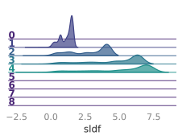


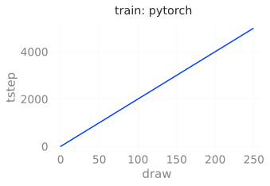
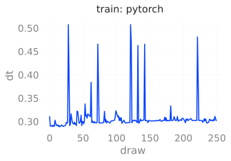


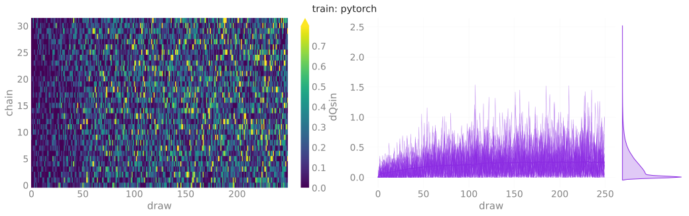


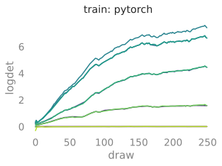


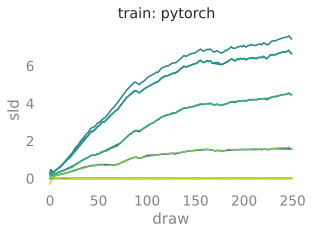


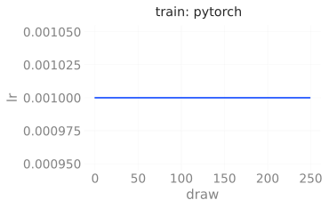
Inference
Evaluation
outputs['pytorch']['eval'] = ptExpU1.trainer.eval(
job_type='eval',
nprint=500,
nchains=128,
eval_steps=2000,
)
dset_eval_pt = ptExpU1.save_dataset(job_type='eval', nchains=32)
# dset_eval_pt = ptExpU1.trainer.histories['eval'].plot_all()output:
[2023-12-05 11:42:03][WARNING][trainer.py:467] - x.shape (original): torch.Size([2048, 2, 16, 16])
[2023-12-05 11:42:03][WARNING][trainer.py:467] - x[:nchains].shape: torch.Size([128, 2, 16, 16])
[2023-12-05 11:42:03][INFO][trainer.py:1077] - eps=None beta=4.0 nlog=10 table=<rich.table.Table object at 0x7efbf40b16f0> nprint=500 eval_steps=2000 nleapfrog=None
[2023-12-05 11:42:06][INFO][trainer.py:1207] - estep=0 dt=0.140 beta=4.000 loss=-9.137 dQsin=0.269 dQint=0.148 energy=407.745 logprob=404.067 logdet=3.678 sldf=2.253 sldb=-1.896 sld=3.678 xeps=0.145 veps=0.147 acc=0.913 sumlogdet=0.004 acc_mask=0.930 plaqs=0.854 intQ=0.156 sinQ=0.151
[2023-12-05 11:43:38][INFO][trainer.py:1207] - estep=500 dt=0.119 beta=4.000 loss=-7.346 dQsin=0.264 dQint=0.125 energy=403.427 logprob=399.747 logdet=3.680 sldf=2.255 sldb=-1.906 sld=3.680 xeps=0.145 veps=0.147 acc=0.909 sumlogdet=0.005 acc_mask=0.883 plaqs=0.864 intQ=-0.305 sinQ=-0.216
[2023-12-05 11:45:11][INFO][trainer.py:1207] - estep=1000 dt=0.119 beta=4.000 loss=-8.075 dQsin=0.287 dQint=0.133 energy=402.009 logprob=398.331 logdet=3.678 sldf=2.253 sldb=-1.898 sld=3.678 xeps=0.145 veps=0.147 acc=0.897 sumlogdet=0.005 acc_mask=0.945 plaqs=0.863 intQ=-0.023 sinQ=-0.042
[2023-12-05 11:46:44][INFO][trainer.py:1207] - estep=1500 dt=0.119 beta=4.000 loss=-11.254 dQsin=0.261 dQint=0.109 energy=401.410 logprob=397.734 logdet=3.676 sldf=2.254 sldb=-1.918 sld=3.676 xeps=0.145 veps=0.147 acc=0.896 sumlogdet=0.004 acc_mask=0.875 plaqs=0.862 intQ=0.078 sinQ=0.071
[2023-12-05 11:48:21][INFO][plot_helpers.py:1046] - Saving figure to: /lus/grand/projects/DLHMC/foremans/locations/thetaGPU/projects/saforem2/l2hmc-qcd/src/l2hmc/notebooks/outputs/2023-12-05-111355/pytorch/plots/ridgeplots/svgs/energy_ridgeplot.svg
[2023-12-05 11:48:23][INFO][plot_helpers.py:1046] - Saving figure to: /lus/grand/projects/DLHMC/foremans/locations/thetaGPU/projects/saforem2/l2hmc-qcd/src/l2hmc/notebooks/outputs/2023-12-05-111355/pytorch/plots/ridgeplots/svgs/logprob_ridgeplot.svg
[2023-12-05 11:48:25][INFO][plot_helpers.py:1046] - Saving figure to: /lus/grand/projects/DLHMC/foremans/locations/thetaGPU/projects/saforem2/l2hmc-qcd/src/l2hmc/notebooks/outputs/2023-12-05-111355/pytorch/plots/ridgeplots/svgs/logdet_ridgeplot.svg
[2023-12-05 11:48:27][INFO][plot_helpers.py:1046] - Saving figure to: /lus/grand/projects/DLHMC/foremans/locations/thetaGPU/projects/saforem2/l2hmc-qcd/src/l2hmc/notebooks/outputs/2023-12-05-111355/pytorch/plots/ridgeplots/svgs/sldf_ridgeplot.svg
[2023-12-05 11:48:28][INFO][plot_helpers.py:1046] - Saving figure to: /lus/grand/projects/DLHMC/foremans/locations/thetaGPU/projects/saforem2/l2hmc-qcd/src/l2hmc/notebooks/outputs/2023-12-05-111355/pytorch/plots/ridgeplots/svgs/sldb_ridgeplot.svg
[2023-12-05 11:48:30][INFO][plot_helpers.py:1046] - Saving figure to: /lus/grand/projects/DLHMC/foremans/locations/thetaGPU/projects/saforem2/l2hmc-qcd/src/l2hmc/notebooks/outputs/2023-12-05-111355/pytorch/plots/ridgeplots/svgs/sld_ridgeplot.svg
[2023-12-05 11:48:45][INFO][common.py:275] - Saving dataset to: /lus/grand/projects/DLHMC/foremans/locations/thetaGPU/projects/saforem2/l2hmc-qcd/src/l2hmc/notebooks/outputs/2023-12-05-111355/pytorch/data/eval_data.h5
[2023-12-05 11:48:45][INFO][experiment.py:378] - Done saving and analyzing data.
[2023-12-05 11:48:45][INFO][experiment.py:379] - Creating summaries for WandB, Aim


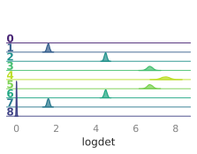

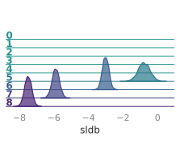

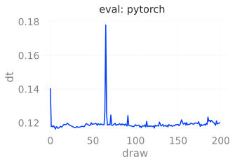


HMC
outputs['pytorch']['hmc'] = ptExpU1.trainer.eval(
job_type='hmc',
nprint=500,
nchains=128,
eval_steps=2000,
)
dset_hmc_pt = ptExpU1.save_dataset(job_type='hmc', nchains=32)
# dset_hmc_pt = ptExpU1.trainer.histories['hmc'].plot_all()output:
[2023-12-05 11:49:07][WARNING][trainer.py:467] - Step size `eps` not specified for HMC! Using default: 0.2500 for generic HMC
[2023-12-05 11:49:07][WARNING][trainer.py:467] - x.shape (original): torch.Size([2048, 2, 16, 16])
[2023-12-05 11:49:07][WARNING][trainer.py:467] - x[:nchains].shape: torch.Size([128, 2, 16, 16])
[2023-12-05 11:49:07][INFO][trainer.py:1077] - eps=0.25 beta=4.0 nlog=10 table=<rich.table.Table object at 0x7efbf4167580> nprint=500 eval_steps=2000 nleapfrog=8
[2023-12-05 11:49:09][INFO][trainer.py:1207] - hstep=0 dt=0.018 beta=4.000 loss=46.645 dQsin=0.039 dQint=0.031 energy=412.712 logprob=412.712 logdet=0.000 acc=0.114 sumlogdet=0.000 acc_mask=0.125 plaqs=0.853 intQ=-0.117 sinQ=-0.126
[2023-12-05 11:49:50][INFO][trainer.py:1207] - hstep=500 dt=0.018 beta=4.000 loss=51.958 dQsin=0.014 dQint=0.000 energy=401.030 logprob=401.030 logdet=0.000 acc=0.054 sumlogdet=0.000 acc_mask=0.055 plaqs=0.863 intQ=-0.016 sinQ=-0.038
[2023-12-05 11:50:31][INFO][trainer.py:1207] - hstep=1000 dt=0.017 beta=4.000 loss=58.470 dQsin=0.017 dQint=0.016 energy=403.846 logprob=403.846 logdet=0.000 acc=0.055 sumlogdet=0.000 acc_mask=0.055 plaqs=0.862 intQ=-0.078 sinQ=-0.089
[2023-12-05 11:51:13][INFO][trainer.py:1207] - hstep=1500 dt=0.017 beta=4.000 loss=54.941 dQsin=0.014 dQint=0.000 energy=400.502 logprob=400.502 logdet=0.000 acc=0.056 sumlogdet=0.000 acc_mask=0.047 plaqs=0.865 intQ=-0.117 sinQ=-0.096
[2023-12-05 11:51:58][INFO][plot_helpers.py:1046] - Saving figure to: /lus/grand/projects/DLHMC/foremans/locations/thetaGPU/projects/saforem2/l2hmc-qcd/src/l2hmc/notebooks/outputs/2023-12-05-111355/pytorch/plots/ridgeplots/svgs/energy_ridgeplot.svg
[2023-12-05 11:52:00][INFO][plot_helpers.py:1046] - Saving figure to: /lus/grand/projects/DLHMC/foremans/locations/thetaGPU/projects/saforem2/l2hmc-qcd/src/l2hmc/notebooks/outputs/2023-12-05-111355/pytorch/plots/ridgeplots/svgs/logprob_ridgeplot.svg
[2023-12-05 11:52:02][INFO][plot_helpers.py:1046] - Saving figure to: /lus/grand/projects/DLHMC/foremans/locations/thetaGPU/projects/saforem2/l2hmc-qcd/src/l2hmc/notebooks/outputs/2023-12-05-111355/pytorch/plots/ridgeplots/svgs/logdet_ridgeplot.svg
[2023-12-05 11:52:14][INFO][common.py:275] - Saving dataset to: /lus/grand/projects/DLHMC/foremans/locations/thetaGPU/projects/saforem2/l2hmc-qcd/src/l2hmc/notebooks/outputs/2023-12-05-111355/pytorch/data/hmc_data.h5
[2023-12-05 11:52:14][INFO][experiment.py:378] - Done saving and analyzing data.
[2023-12-05 11:52:14][INFO][experiment.py:379] - Creating summaries for WandB, Aim


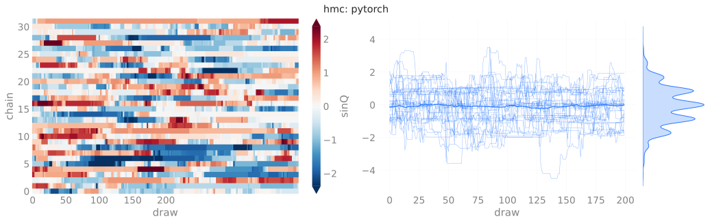
TensorFlow
Train
outputs['tensorflow']['train'] = tfExpU1.trainer.train(
nera=1,
nepoch=5000,
beta=4.0,
# beta=[4.0, 4.25, 4.5, 4.75, 5.0],
)
# dset_train_tf = tfExpU1.trainer.histories['train'].plot_all()
_ = tfExpU1.save_dataset(job_type='train', nchains=32)
output:
[2023-12-05 11:52:30][INFO][trainer.py:198] - Looking for checkpoints in: /lus/grand/projects/DLHMC/foremans/locations/thetaGPU/projects/saforem2/l2hmc-qcd/src/l2hmc/checkpoints/U1/2-16-16/nlf-4/xsplit-True/sepnets-True/merge-True/net-16-16-16-16_dp-0.2_bn-True/tensorflow
[2023-12-05 11:52:30][INFO][trainer.py:198] - No checkpoints found to load from. Continuing
[2023-12-05 11:52:31][INFO][trainer.py:1259] - ERA: 0 / 1, BETA: 4.000
[2023-12-05 11:53:11][INFO][trainer.py:198] - Thermalizing configs @ 4.00 took 40.3690 s
Training: 0%| | 0/5000 [00:00<?, ?it/s][2023-12-05 11:53:21][WARNING][deprecation.py:350] - From /lus/grand/projects/datascience/foremans/locations/thetaGPU/miniconda3/envs/2023-04-26/lib/python3.10/site-packages/tensorflow/python/autograph/pyct/static_analysis/liveness.py:83: Analyzer.lamba_check (from tensorflow.python.autograph.pyct.static_analysis.liveness) is deprecated and will be removed after 2023-09-23. Instructions for updating: Lambda fuctions will be no more assumed to be used in the statement where they are used, or at least in the same block. https://github.com/tensorflow/tensorflow/issues/56089
[2023-12-05 11:53:55][WARNING][trainer.py:194] - Resetting optimizer state!
[2023-12-05 11:53:55][WARNING][trainer.py:194] - Chains are stuck! Re-drawing x !
[2023-12-05 11:53:56][INFO][trainer.py:1085] - era=0 epoch=0 tstep=1.000 dt=44.185 beta=4.000 loss=99.113 dQsin=0.000 dQint=0.000 energy=1288.705 logprob=1288.768 logdet=-0.063 sldf=-0.013 sldb=-0.029 sld=-0.063 xeps=0.051 veps=0.049 acc=0.000 sumlogdet=0.000 acc_mask=0.000 plaqs=0.000 intQ=0.046 sinQ=0.038 lr=0.001
[2023-12-05 11:54:23][INFO][trainer.py:1085] - era=0 epoch=200 tstep=201.000 dt=0.103 beta=4.000 loss=2.764 dQsin=0.126 dQint=0.027 energy=397.227 logprob=397.120 logdet=0.107 sldf=0.070 sldb=-0.071 sld=0.107 xeps=0.051 veps=0.047 acc=0.610 sumlogdet=-0.015 acc_mask=0.610 plaqs=0.863 intQ=-0.045 sinQ=-0.039 lr=0.001
[2023-12-05 11:54:51][INFO][trainer.py:1085] - era=0 epoch=400 tstep=401.000 dt=0.105 beta=4.000 loss=0.957 dQsin=0.151 dQint=0.028 energy=395.704 logprob=395.575 logdet=0.130 sldf=0.082 sldb=-0.076 sld=0.130 xeps=0.050 veps=0.047 acc=0.741 sumlogdet=-0.002 acc_mask=0.737 plaqs=0.864 intQ=-0.063 sinQ=-0.049 lr=0.001
[2023-12-05 11:55:18][INFO][trainer.py:1085] - era=0 epoch=600 tstep=601.000 dt=0.094 beta=4.000 loss=0.614 dQsin=0.168 dQint=0.034 energy=396.128 logprob=395.997 logdet=0.132 sldf=0.081 sldb=-0.070 sld=0.132 xeps=0.051 veps=0.048 acc=0.816 sumlogdet=-0.004 acc_mask=0.826 plaqs=0.864 intQ=0.005 sinQ=0.009 lr=0.001
[2023-12-05 11:55:45][INFO][trainer.py:1085] - era=0 epoch=800 tstep=801.000 dt=0.103 beta=4.000 loss=-0.637 dQsin=0.175 dQint=0.034 energy=395.974 logprob=395.842 logdet=0.132 sldf=0.080 sldb=-0.064 sld=0.132 xeps=0.053 veps=0.050 acc=0.866 sumlogdet=0.001 acc_mask=0.853 plaqs=0.863 intQ=0.012 sinQ=0.013 lr=0.001
[2023-12-05 11:56:11][INFO][trainer.py:1085] - era=0 epoch=1000 tstep=1001.000 dt=0.095 beta=4.000 loss=-0.714 dQsin=0.185 dQint=0.038 energy=395.177 logprob=395.041 logdet=0.135 sldf=0.083 sldb=-0.067 sld=0.135 xeps=0.055 veps=0.051 acc=0.883 sumlogdet=-0.002 acc_mask=0.886 plaqs=0.864 intQ=0.028 sinQ=0.020 lr=0.001
[2023-12-05 11:56:37][INFO][trainer.py:1085] - era=0 epoch=1200 tstep=1201.000 dt=0.097 beta=4.000 loss=-2.043 dQsin=0.197 dQint=0.047 energy=396.446 logprob=396.308 logdet=0.138 sldf=0.084 sldb=-0.067 sld=0.138 xeps=0.057 veps=0.054 acc=0.893 sumlogdet=0.001 acc_mask=0.904 plaqs=0.863 intQ=0.029 sinQ=0.022 lr=0.001
[2023-12-05 11:57:04][INFO][trainer.py:1085] - era=0 epoch=1400 tstep=1401.000 dt=0.095 beta=4.000 loss=-1.262 dQsin=0.193 dQint=0.044 energy=397.347 logprob=397.203 logdet=0.144 sldf=0.088 sldb=-0.071 sld=0.144 xeps=0.061 veps=0.057 acc=0.909 sumlogdet=-0.000 acc_mask=0.898 plaqs=0.863 intQ=-0.008 sinQ=0.003 lr=0.001
[2023-12-05 11:57:30][INFO][trainer.py:1085] - era=0 epoch=1600 tstep=1601.000 dt=0.096 beta=4.000 loss=-2.389 dQsin=0.203 dQint=0.050 energy=396.358 logprob=396.205 logdet=0.153 sldf=0.094 sldb=-0.079 sld=0.153 xeps=0.065 veps=0.060 acc=0.915 sumlogdet=0.001 acc_mask=0.922 plaqs=0.863 intQ=0.010 sinQ=0.001 lr=0.001
[2023-12-05 11:57:55][INFO][trainer.py:1085] - era=0 epoch=1800 tstep=1801.000 dt=0.093 beta=4.000 loss=-3.667 dQsin=0.215 dQint=0.056 energy=396.103 logprob=395.927 logdet=0.175 sldf=0.108 sldb=-0.093 sld=0.175 xeps=0.071 veps=0.066 acc=0.923 sumlogdet=0.001 acc_mask=0.926 plaqs=0.864 intQ=0.023 sinQ=0.025 lr=0.001
[2023-12-05 11:58:19][INFO][trainer.py:1085] - era=0 epoch=2000 tstep=2001.000 dt=0.086 beta=4.000 loss=-3.192 dQsin=0.211 dQint=0.050 energy=395.770 logprob=395.575 logdet=0.195 sldf=0.120 sldb=-0.108 sld=0.195 xeps=0.077 veps=0.071 acc=0.932 sumlogdet=-0.001 acc_mask=0.925 plaqs=0.864 intQ=0.042 sinQ=0.034 lr=0.001
[2023-12-05 11:58:44][INFO][trainer.py:1085] - era=0 epoch=2200 tstep=2201.000 dt=0.088 beta=4.000 loss=-3.860 dQsin=0.222 dQint=0.052 energy=395.970 logprob=395.744 logdet=0.226 sldf=0.139 sldb=-0.120 sld=0.226 xeps=0.083 veps=0.076 acc=0.932 sumlogdet=0.000 acc_mask=0.942 plaqs=0.864 intQ=-0.017 sinQ=-0.018 lr=0.001
[2023-12-05 11:59:08][INFO][trainer.py:1085] - era=0 epoch=2400 tstep=2401.000 dt=0.089 beta=4.000 loss=-5.338 dQsin=0.234 dQint=0.063 energy=396.330 logprob=396.058 logdet=0.271 sldf=0.165 sldb=-0.130 sld=0.271 xeps=0.092 veps=0.084 acc=0.927 sumlogdet=0.000 acc_mask=0.935 plaqs=0.863 intQ=-0.083 sinQ=-0.069 lr=0.001
[2023-12-05 11:59:33][INFO][trainer.py:1085] - era=0 epoch=2600 tstep=2601.000 dt=0.089 beta=4.000 loss=-6.596 dQsin=0.238 dQint=0.067 energy=396.078 logprob=395.751 logdet=0.327 sldf=0.197 sldb=-0.137 sld=0.327 xeps=0.100 veps=0.091 acc=0.919 sumlogdet=-0.000 acc_mask=0.911 plaqs=0.863 intQ=-0.020 sinQ=-0.018 lr=0.001
[2023-12-05 11:59:58][INFO][trainer.py:1085] - era=0 epoch=2800 tstep=2801.000 dt=0.087 beta=4.000 loss=-6.121 dQsin=0.239 dQint=0.071 energy=396.373 logprob=396.000 logdet=0.373 sldf=0.222 sldb=-0.138 sld=0.373 xeps=0.108 veps=0.097 acc=0.912 sumlogdet=-0.000 acc_mask=0.908 plaqs=0.863 intQ=-0.003 sinQ=-0.007 lr=0.001
[2023-12-05 12:00:24][INFO][trainer.py:1085] - era=0 epoch=3000 tstep=3001.000 dt=0.092 beta=4.000 loss=-7.409 dQsin=0.247 dQint=0.078 energy=396.537 logprob=396.127 logdet=0.411 sldf=0.244 sldb=-0.141 sld=0.411 xeps=0.113 veps=0.101 acc=0.914 sumlogdet=-0.000 acc_mask=0.915 plaqs=0.863 intQ=-0.025 sinQ=-0.023 lr=0.001
[2023-12-05 12:00:50][INFO][trainer.py:1085] - era=0 epoch=3200 tstep=3201.000 dt=0.094 beta=4.000 loss=-7.105 dQsin=0.242 dQint=0.063 energy=396.792 logprob=396.322 logdet=0.469 sldf=0.277 sldb=-0.145 sld=0.469 xeps=0.121 veps=0.107 acc=0.918 sumlogdet=0.001 acc_mask=0.917 plaqs=0.863 intQ=0.019 sinQ=0.016 lr=0.001
[2023-12-05 12:01:15][INFO][trainer.py:1085] - era=0 epoch=3400 tstep=3401.000 dt=0.090 beta=4.000 loss=-7.398 dQsin=0.244 dQint=0.082 energy=396.890 logprob=396.384 logdet=0.506 sldf=0.298 sldb=-0.151 sld=0.506 xeps=0.126 veps=0.111 acc=0.912 sumlogdet=-0.000 acc_mask=0.901 plaqs=0.863 intQ=0.006 sinQ=0.006 lr=0.001
[2023-12-05 12:01:41][INFO][trainer.py:1085] - era=0 epoch=3600 tstep=3601.000 dt=0.092 beta=4.000 loss=-7.570 dQsin=0.248 dQint=0.073 energy=396.491 logprob=395.964 logdet=0.528 sldf=0.312 sldb=-0.167 sld=0.528 xeps=0.129 veps=0.114 acc=0.910 sumlogdet=-0.000 acc_mask=0.914 plaqs=0.864 intQ=0.028 sinQ=0.021 lr=0.001
[2023-12-05 12:02:07][INFO][trainer.py:1085] - era=0 epoch=3800 tstep=3801.000 dt=0.102 beta=4.000 loss=-7.497 dQsin=0.245 dQint=0.095 energy=396.474 logprob=395.923 logdet=0.551 sldf=0.326 sldb=-0.180 sld=0.551 xeps=0.132 veps=0.116 acc=0.913 sumlogdet=-0.000 acc_mask=0.901 plaqs=0.863 intQ=0.016 sinQ=0.017 lr=0.001
[2023-12-05 12:02:33][INFO][trainer.py:1085] - era=0 epoch=4000 tstep=4001.000 dt=0.092 beta=4.000 loss=-8.825 dQsin=0.254 dQint=0.087 energy=397.397 logprob=396.827 logdet=0.570 sldf=0.338 sldb=-0.194 sld=0.570 xeps=0.136 veps=0.119 acc=0.908 sumlogdet=-0.000 acc_mask=0.902 plaqs=0.863 intQ=0.003 sinQ=-0.000 lr=0.001
[2023-12-05 12:02:57][INFO][trainer.py:1085] - era=0 epoch=4200 tstep=4201.000 dt=0.094 beta=4.000 loss=-7.265 dQsin=0.244 dQint=0.074 energy=396.583 logprob=395.992 logdet=0.591 sldf=0.351 sldb=-0.207 sld=0.591 xeps=0.139 veps=0.121 acc=0.910 sumlogdet=-0.001 acc_mask=0.902 plaqs=0.864 intQ=0.042 sinQ=0.031 lr=0.001
[2023-12-05 12:03:22][INFO][trainer.py:1085] - era=0 epoch=4400 tstep=4401.000 dt=0.092 beta=4.000 loss=-7.974 dQsin=0.256 dQint=0.096 energy=397.000 logprob=396.407 logdet=0.593 sldf=0.353 sldb=-0.214 sld=0.593 xeps=0.140 veps=0.122 acc=0.919 sumlogdet=0.000 acc_mask=0.928 plaqs=0.863 intQ=-0.015 sinQ=-0.010 lr=0.001
[2023-12-05 12:03:47][INFO][trainer.py:1085] - era=0 epoch=4600 tstep=4601.000 dt=0.092 beta=4.000 loss=-8.677 dQsin=0.258 dQint=0.094 energy=396.710 logprob=396.109 logdet=0.601 sldf=0.359 sldb=-0.223 sld=0.601 xeps=0.142 veps=0.122 acc=0.903 sumlogdet=-0.000 acc_mask=0.897 plaqs=0.864 intQ=0.012 sinQ=0.007 lr=0.001
[2023-12-05 12:04:12][INFO][trainer.py:1085] - era=0 epoch=4800 tstep=4801.000 dt=0.094 beta=4.000 loss=-8.739 dQsin=0.258 dQint=0.087 energy=396.618 logprob=396.036 logdet=0.583 sldf=0.348 sldb=-0.218 sld=0.583 xeps=0.140 veps=0.121 acc=0.921 sumlogdet=-0.000 acc_mask=0.914 plaqs=0.864 intQ=-0.034 sinQ=-0.027 lr=0.001
[2023-12-05 12:04:37][INFO][trainer.py:1296] - Saving took: 4.76837e-06s
[2023-12-05 12:04:37][INFO][trainer.py:1297] - Checkpoint saved to: /lus/grand/projects/DLHMC/foremans/locations/thetaGPU/projects/saforem2/l2hmc-qcd/src/l2hmc/checkpoints/U1/2-16-16/nlf-4/xsplit-True/sepnets-True/merge-True/net-16-16-16-16_dp-0.2_bn-True/tensorflow
[2023-12-05 12:04:37][INFO][trainer.py:1298] - Era 0 took: 725.949s
[2023-12-05 12:04:38][INFO][plot_helpers.py:1046] - Saving figure to: /lus/grand/projects/DLHMC/foremans/locations/thetaGPU/projects/saforem2/l2hmc-qcd/src/l2hmc/notebooks/outputs/2023-12-05-111405/tensorflow/plots/ridgeplots/svgs/energy_ridgeplot.svg
[2023-12-05 12:04:40][INFO][plot_helpers.py:1046] - Saving figure to: /lus/grand/projects/DLHMC/foremans/locations/thetaGPU/projects/saforem2/l2hmc-qcd/src/l2hmc/notebooks/outputs/2023-12-05-111405/tensorflow/plots/ridgeplots/svgs/logprob_ridgeplot.svg
[2023-12-05 12:04:42][INFO][plot_helpers.py:1046] - Saving figure to: /lus/grand/projects/DLHMC/foremans/locations/thetaGPU/projects/saforem2/l2hmc-qcd/src/l2hmc/notebooks/outputs/2023-12-05-111405/tensorflow/plots/ridgeplots/svgs/logdet_ridgeplot.svg
[2023-12-05 12:04:44][INFO][plot_helpers.py:1046] - Saving figure to: /lus/grand/projects/DLHMC/foremans/locations/thetaGPU/projects/saforem2/l2hmc-qcd/src/l2hmc/notebooks/outputs/2023-12-05-111405/tensorflow/plots/ridgeplots/svgs/sldf_ridgeplot.svg
[2023-12-05 12:04:46][INFO][plot_helpers.py:1046] - Saving figure to: /lus/grand/projects/DLHMC/foremans/locations/thetaGPU/projects/saforem2/l2hmc-qcd/src/l2hmc/notebooks/outputs/2023-12-05-111405/tensorflow/plots/ridgeplots/svgs/sldb_ridgeplot.svg
[2023-12-05 12:04:48][INFO][plot_helpers.py:1046] - Saving figure to: /lus/grand/projects/DLHMC/foremans/locations/thetaGPU/projects/saforem2/l2hmc-qcd/src/l2hmc/notebooks/outputs/2023-12-05-111405/tensorflow/plots/ridgeplots/svgs/sld_ridgeplot.svg
[2023-12-05 12:05:19][INFO][common.py:275] - Saving dataset to: /lus/grand/projects/DLHMC/foremans/locations/thetaGPU/projects/saforem2/l2hmc-qcd/src/l2hmc/notebooks/outputs/2023-12-05-111405/tensorflow/data/train_data.h5
[2023-12-05 12:05:20][INFO][experiment.py:378] - Done saving and analyzing data.
[2023-12-05 12:05:20][INFO][experiment.py:379] - Creating summaries for WandB, Aim


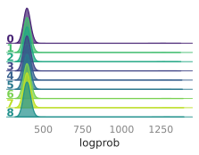


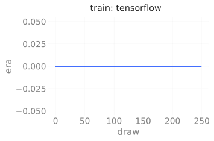
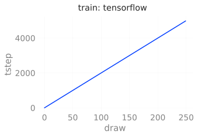


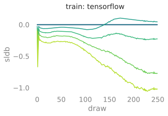


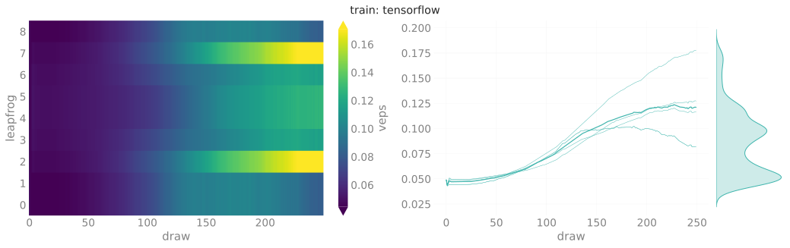


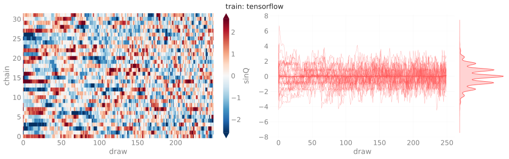

Inference
Evaluate
outputs['tensorflow']['eval'] = tfExpU1.trainer.eval(
job_type='eval',
nprint=500,
nchains=128,
eval_steps=2000,
)
# dset_eval_tf = tfExpU1.trainer.histories['eval'].plot_all()
_ = tfExpU1.save_dataset(job_type='eval', nchains=32)output:
[2023-12-05 12:05:41][WARNING][trainer.py:194] - x.shape (original): (2048, 2, 16, 16)
[2023-12-05 12:05:41][WARNING][trainer.py:194] - x[:nchains].shape: (128, 2, 16, 16)
[2023-12-05 12:05:41][INFO][trainer.py:198] - eps = None beta = 4.0 nlog = 10 table = <rich.table.Table object at 0x7efa683ea0e0> nprint = 500 eval_steps = 2000 nleapfrog = None
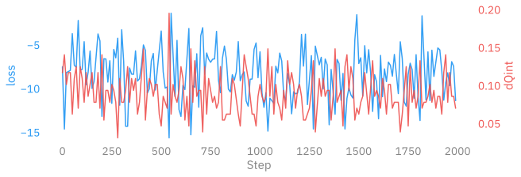
0%| | 0/2000 [00:00<?, ?it/s][2023-12-05 12:06:28][INFO][trainer.py:198] - estep=0 dt=4.940 beta=4.000 loss=-7.502 dQsin=0.238 dQint=0.117 energy=396.232 logprob=395.648 logdet=0.584 sldf=0.349 sldb=-0.222 sld=0.584 xeps=0.141 veps=0.121 acc=0.928 sumlogdet=0.001 acc_mask=0.914 plaqs=0.863 intQ=0.023 sinQ=0.036
[2023-12-05 12:07:17][INFO][trainer.py:198] - estep=500 dt=0.024 beta=4.000 loss=-3.405 dQsin=0.239 dQint=0.047 energy=395.434 logprob=394.850 logdet=0.584 sldf=0.349 sldb=-0.223 sld=0.584 xeps=0.141 veps=0.121 acc=0.934 sumlogdet=0.000 acc_mask=0.969 plaqs=0.865 intQ=0.008 sinQ=0.001
[2023-12-05 12:08:01][INFO][trainer.py:198] - estep=1000 dt=0.024 beta=4.000 loss=-5.784 dQsin=0.227 dQint=0.102 energy=393.733 logprob=393.149 logdet=0.584 sldf=0.349 sldb=-0.222 sld=0.584 xeps=0.141 veps=0.121 acc=0.913 sumlogdet=0.000 acc_mask=0.953 plaqs=0.863 intQ=0.188 sinQ=0.178
[2023-12-05 12:08:44][INFO][trainer.py:198] - estep=1500 dt=0.024 beta=4.000 loss=-7.127 dQsin=0.226 dQint=0.063 energy=396.790 logprob=396.205 logdet=0.584 sldf=0.349 sldb=-0.223 sld=0.584 xeps=0.141 veps=0.121 acc=0.902 sumlogdet=-0.000 acc_mask=0.898 plaqs=0.864 intQ=-0.172 sinQ=-0.126
[2023-12-05 12:09:32][INFO][plot_helpers.py:1046] - Saving figure to: /lus/grand/projects/DLHMC/foremans/locations/thetaGPU/projects/saforem2/l2hmc-qcd/src/l2hmc/notebooks/outputs/2023-12-05-111405/tensorflow/plots/ridgeplots/svgs/energy_ridgeplot.svg
[2023-12-05 12:09:34][INFO][plot_helpers.py:1046] - Saving figure to: /lus/grand/projects/DLHMC/foremans/locations/thetaGPU/projects/saforem2/l2hmc-qcd/src/l2hmc/notebooks/outputs/2023-12-05-111405/tensorflow/plots/ridgeplots/svgs/logprob_ridgeplot.svg
[2023-12-05 12:09:36][INFO][plot_helpers.py:1046] - Saving figure to: /lus/grand/projects/DLHMC/foremans/locations/thetaGPU/projects/saforem2/l2hmc-qcd/src/l2hmc/notebooks/outputs/2023-12-05-111405/tensorflow/plots/ridgeplots/svgs/logdet_ridgeplot.svg
[2023-12-05 12:09:38][INFO][plot_helpers.py:1046] - Saving figure to: /lus/grand/projects/DLHMC/foremans/locations/thetaGPU/projects/saforem2/l2hmc-qcd/src/l2hmc/notebooks/outputs/2023-12-05-111405/tensorflow/plots/ridgeplots/svgs/sldf_ridgeplot.svg
[2023-12-05 12:09:40][INFO][plot_helpers.py:1046] - Saving figure to: /lus/grand/projects/DLHMC/foremans/locations/thetaGPU/projects/saforem2/l2hmc-qcd/src/l2hmc/notebooks/outputs/2023-12-05-111405/tensorflow/plots/ridgeplots/svgs/sldb_ridgeplot.svg
[2023-12-05 12:09:42][INFO][plot_helpers.py:1046] - Saving figure to: /lus/grand/projects/DLHMC/foremans/locations/thetaGPU/projects/saforem2/l2hmc-qcd/src/l2hmc/notebooks/outputs/2023-12-05-111405/tensorflow/plots/ridgeplots/svgs/sld_ridgeplot.svg
[2023-12-05 12:09:57][INFO][common.py:275] - Saving dataset to: /lus/grand/projects/DLHMC/foremans/locations/thetaGPU/projects/saforem2/l2hmc-qcd/src/l2hmc/notebooks/outputs/2023-12-05-111405/tensorflow/data/eval_data.h5
[2023-12-05 12:09:57][INFO][experiment.py:378] - Done saving and analyzing data.
[2023-12-05 12:09:57][INFO][experiment.py:379] - Creating summaries for WandB, Aim


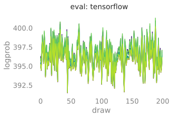
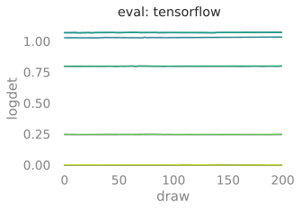


HMC
outputs['tensorflow']['hmc'] = tfExpU1.trainer.eval(
job_type='hmc',
nprint=500,
nchains=128,
eval_steps=2000,
)
_ = tfExpU1.save_dataset(job_type='hmc', nchains=32)output:
[2023-12-05 12:10:19][WARNING][trainer.py:194] - Step size `eps` not specified for HMC! Using default: 0.2500 for generic HMC
[2023-12-05 12:10:19][WARNING][trainer.py:194] - x.shape (original): (2048, 2, 16, 16)
[2023-12-05 12:10:19][WARNING][trainer.py:194] - x[:nchains].shape: (128, 2, 16, 16)
[2023-12-05 12:10:19][INFO][trainer.py:198] - eps = 0.25 beta = 4.0 nlog = 10 table = <rich.table.Table object at 0x7ef93c654940> nprint = 500 eval_steps = 2000 nleapfrog = 8

0%| | 0/2000 [00:00<?, ?it/s][2023-12-05 12:11:01][INFO][trainer.py:198] - hstep=0 dt=0.089 beta=4.000 loss=59.310 dQsin=0.049 dQint=0.039 energy=403.394 logprob=403.394 logdet=0.000 acc=0.059 sumlogdet=0.000 acc_mask=0.078 plaqs=0.863 intQ=-0.109 sinQ=-0.093
[2023-12-05 12:12:14][INFO][trainer.py:198] - hstep=500 dt=0.083 beta=4.000 loss=55.566 dQsin=0.021 dQint=0.016 energy=400.521 logprob=400.521 logdet=0.000 acc=0.061 sumlogdet=0.000 acc_mask=0.047 plaqs=0.864 intQ=0.148 sinQ=0.112
[2023-12-05 12:13:28][INFO][trainer.py:198] - hstep=1000 dt=0.084 beta=4.000 loss=63.178 dQsin=0.019 dQint=0.016 energy=401.798 logprob=401.798 logdet=0.000 acc=0.039 sumlogdet=0.000 acc_mask=0.039 plaqs=0.865 intQ=-0.016 sinQ=-0.016
[2023-12-05 12:14:43][INFO][trainer.py:198] - hstep=1500 dt=0.084 beta=4.000 loss=61.681 dQsin=0.018 dQint=0.008 energy=398.577 logprob=398.577 logdet=0.000 acc=0.058 sumlogdet=0.000 acc_mask=0.062 plaqs=0.865 intQ=-0.148 sinQ=-0.140
[2023-12-05 12:16:02][INFO][plot_helpers.py:1046] - Saving figure to: /lus/grand/projects/DLHMC/foremans/locations/thetaGPU/projects/saforem2/l2hmc-qcd/src/l2hmc/notebooks/outputs/2023-12-05-111405/tensorflow/plots/ridgeplots/svgs/energy_ridgeplot.svg
[2023-12-05 12:16:03][INFO][plot_helpers.py:1046] - Saving figure to: /lus/grand/projects/DLHMC/foremans/locations/thetaGPU/projects/saforem2/l2hmc-qcd/src/l2hmc/notebooks/outputs/2023-12-05-111405/tensorflow/plots/ridgeplots/svgs/logprob_ridgeplot.svg
[2023-12-05 12:16:05][INFO][plot_helpers.py:1046] - Saving figure to: /lus/grand/projects/DLHMC/foremans/locations/thetaGPU/projects/saforem2/l2hmc-qcd/src/l2hmc/notebooks/outputs/2023-12-05-111405/tensorflow/plots/ridgeplots/svgs/logdet_ridgeplot.svg
[2023-12-05 12:16:17][INFO][common.py:275] - Saving dataset to: /lus/grand/projects/DLHMC/foremans/locations/thetaGPU/projects/saforem2/l2hmc-qcd/src/l2hmc/notebooks/outputs/2023-12-05-111405/tensorflow/data/hmc_data.h5
[2023-12-05 12:16:17][INFO][experiment.py:378] - Done saving and analyzing data.
[2023-12-05 12:16:17][INFO][experiment.py:379] - Creating summaries for WandB, Aim


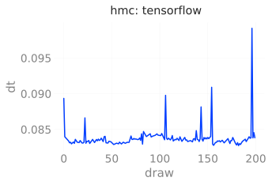


Model Performance
Our goal is improving the efficiency of our MCMC sampler.
In particular, we are interested in generating independent save_datasetrations which we can then use to calculate expectation values of physical observables.
For our purposes, we are interested in obtaining lattice configurations from distinct topological charge sectors, as characterized by a configurations topological charge, Q.
HMC is known to suffer from critical slowing down, a phenomenon in which our configurations remains stuck in some local topological charge sector and fails to produce distinct configurations.
In particular, it is known that the integrated autocorrelation time of the topological charge \tau grows exponentially with decreasing lattice spacing (i.e. continuum limit), making this theory especially problematic.
Because of this, we can assess our models’ performance by looking at the tunneling rate, i.e. the rate at which our sampler jumps between these different charge sectors.
We can write this quantity as:
\delta Q = |Q^{(i)} - Q^{(i-1)}|
where we look at the difference in the topological charge between sequential configurations.
Note: The efficiency of our sampler is directly proportional to the tunneling rate, which is inversely proportional to the integrated autocorrelation time \tau, i.e.
\text{Efficiency} \propto \delta Q \propto \frac{1}{\tau}
Explicitly, this means that the more efficient the model \longrightarrow
- the larger tunneling rate
- the smaller integrated autocorrelation time for Q
import xarray as xr
def get_thermalized_configs(
x: np.ndarray | xr.DataArray,
drop: int = 5
) -> np.ndarray | xr.DataArray:
"""Drop the first `drop` states across all chains.
x.shape = [draws, chains]
"""
if isinstance(x, np.ndarray):
return np.sort(x)[..., :-drop]
if isinstance(x, xr.DataArray):
return x.sortby(
['chain', 'draw'],
ascending=False
)[..., :-drop]
raise TypeErrorComparisons
We can measure our models’ performance explicitly by looking at the average tunneling rate, \delta Q_{\mathbb{Z}}, for our trained model and comparing it against generic HMC.
Recall,
\delta Q_{\mathbb{Z}} := \big|Q^{(i+1)}_{\mathbb{Z}} - Q^{(i)}_{\mathbb{Z}}\big|
where a higher value of \delta Q_{\mathbb{Z}} corresponds to better tunneling of the topological charge, Q_{\mathbb{Z}}.
Note that we can get a concise representation of the data from different parts of our run via:
Note that the data from each of the different parts of our experiment (i.e. train, eval, and hmc) are stored as a dict, e.g.
>>> list(ptExpU1.trainer.histories.keys())
['train', 'eval', 'hmc']
>>> train_history = ptExpU1.trainer.histories['train']
>>> train_dset = train_history.get_dataset()
>>> assert isinstance(train_history, l2hmc.utils.history.BaseHistory)
>>> assert isinstance(train_dset, xarray.Dataset)(see below, for example)
We aggregate the data into the dsets dict below, grouped by:
- Framework (
pytorch/tensorflow) - Job type (
train,eval,hmc)
import logging
log = logging.getLogger(__name__)
dsets = {}
fws = ['pt', 'tf']
modes = ['train', 'eval', 'hmc']
for fw in fws:
dsets[fw] = {}
for mode in modes:
hist = None
if fw == 'pt':
hist = ptExpU1.trainer.histories.get(mode, None)
elif fw == 'tf':
hist = tfExpU1.trainer.histories.get(mode, None)
if hist is not None:
log.info(f'Getting dataset for {fw}: {mode}')
dsets[fw][mode] = hist.get_dataset()[2023-12-05 12:16:33][INFO][2324717418.py:15] - Getting dataset for pt: train
[2023-12-05 12:16:33][INFO][2324717418.py:15] - Getting dataset for pt: eval
[2023-12-05 12:16:33][INFO][2324717418.py:15] - Getting dataset for pt: hmc
[2023-12-05 12:16:33][INFO][2324717418.py:15] - Getting dataset for tf: train
[2023-12-05 12:16:33][INFO][2324717418.py:15] - Getting dataset for tf: eval
[2023-12-05 12:16:33][INFO][2324717418.py:15] - Getting dataset for tf: hmc
dset_eval_pt = ptExpU1.trainer.histories['eval'].get_dataset()
dset_hmc_pt = ptExpU1.trainer.histories['hmc'].get_dataset()import numpy as np
import matplotlib.pyplot as plt
plt.rcParams['text.usetex'] = False
import matplotlib.pyplot as plt
from l2hmc.utils.plot_helpers import COLORS
# ---------------------------------------------
# ---- DROP FIRST 20% FOR THERMALIZATION ------
# ---------------------------------------------
KEEP = int(0.8 * len(dset_eval_pt.draw))
dqpte = get_thermalized_configs(dset_eval_pt['dQint'].astype('int'))
dqpth = get_thermalized_configs(dset_hmc_pt['dQint'].astype('int'))
#dqpte = get_thermalized_configs(dsets['pt']['eval']['dQint'].astype('int'))
#dqpth = get_thermalized_configs(dsets['pt']['hmc']['dQint'].astype('int'))dqtfe = get_thermalized_configs(dsets['tf']['eval']['dQint'].astype('int'))
dqtfh = get_thermalized_configs(dsets['tf']['hmc']['dQint'].astype('int'))dqpte_tot = dqpte.sum().values.item()
dqpth_tot = dqpth.sum().values.item()log.info(f'{dqpte_tot=}')
log.info(f'{dqpth_tot=}')[2023-12-05 12:16:34][INFO][853527999.py:1] - dqpte_tot=1261
[2023-12-05 12:16:34][INFO][853527999.py:2] - dqpth_tot=170
with plt.rc_context(
{
'text.usetex': False,
#'font.family': 'sans-serif',
#'font.sans-serif': 'IBM Plex Sans',
#'mathtext.fontset': 'dejavusans',
}
):
fig, ax = plt.subplots(figsize=(8, 3))
_ = sns.distplot(
dqpth.sum('chain'),
kde=False,
color=COLORS['blue'],
hist_kws={'edgecolor': 'none'},
label=fr'HMC, $ \sum \delta Q =$ {dqpth_tot}',
ax=ax
)
_ = sns.distplot(
dqpte.sum('chain'),
kde=False,
color=COLORS['red'],
hist_kws={'edgecolor': 'none'},
label=fr'Trained, $\sum\delta Q =$ {dqpte_tot}',
ax=ax
)
_ = ax.set_xlabel(
#f'# tunneling events / {dqpte.shape[-1]} configurations'
r"$\delta Q$",
#fontname="IBM Plex Sans",
#textcolor='#838383',
)
_ = ax.grid(alpha=0.0)
_ = ax.legend(loc='best', frameon=False)
plt.legend()
PyTorch (red) vs HMC (blue).dqtfe_tot = dqtfe.sum().values.item()
dqtfh_tot = dqtfh.sum().values.item()
fig, ax = plt.subplots(figsize=(8, 3))
_ = sns.distplot(
dqtfh.sum('chain'),
kde=False,
color=COLORS['blue'],
hist_kws={'edgecolor': 'none'},
label=fr'HMC, $ \sum \delta Q =$ {dqtfh_tot}',
ax=ax
)
_ = sns.distplot(
dqtfe.sum('chain'),
kde=False,
color=COLORS['red'],
hist_kws={'edgecolor': 'none'},
label=fr'Trained, $\sum\delta Q =$ {dqtfe_tot}',
ax=ax
)
_ = ax.set_xlabel(
#f'# tunneling events / {dqtfe.shape[-1]} configurations'
r"$\delta Q$",
#fontname="IBM Plex Sans",
#textcolor='#838383',
)
_ = ax.grid(alpha=0.0)
_ = ax.legend(loc='best', frameon=False)
_ = plt.legend()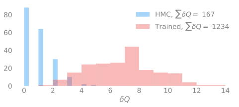
TensorFlow (red) vs HMC (blue).fig, ax = plt.subplots(figsize=(16, 3), ncols=2)
_ = sns.distplot(
dqpte.sum('chain'),
kde=False,
color=COLORS['blue'],
hist_kws={'edgecolor': 'none'},
label='Eval',
ax=ax[0]
)
_ = sns.distplot(
dqpth.sum('chain'),
kde=False,
color=COLORS['red'],
hist_kws={'edgecolor': 'none'},
label='HMC',
ax=ax[0]
)
_ = ax[0].set_title('PyTorch')
_ = ax[0].set_xlabel(
f'# tunneling events / {dqpte.shape[-1]} configurations'
)
_ = ax[0].legend(loc='best', frameon=False)
plt.legend()
_ = sns.distplot(
dqtfe.sum('chain'),
kde=False,
color=COLORS['blue'],
hist_kws={'edgecolor': 'none'},
label='Eval',
ax=ax[1]
)
_ = sns.distplot(
dqtfh.sum('chain'),
kde=False,
color=COLORS['red'],
label='HMC',
ax=ax[1],
hist_kws={'edgecolor': 'none'},
)
_ = ax[1].set_title('TensorFlow')
_ = ax[1].set_xlabel(
r"""$\sum_{i=0} \left|\delta Q_{i}\right|$""",
#fontsize='large',
#f'# tunneling events / {dqpte.shape[-1]} configurations'
)
_ = ax[1].legend(loc='best', frameon=False)[2023-12-05 12:32:51][WARNING][legend.py:1363] - No artists with labels found to put in legend. Note that artists whose label start with an underscore are ignored when legend() is called with no argument.
TensorFlow Results
sns.set_context('notebook')
ndraws = len(dsets['tf']['eval']['dQint'].draw)
drop = int(0.1 * ndraws)
keep = int(0.9 * ndraws)
dqe = dsets['tf']['eval']['dQint'][:, -90:]
dqh = dsets['tf']['hmc']['dQint'][:, -90:]
etot = dqe.astype(int).sum()
htot = dqh.astype(int).sum()
fsize = plt.rcParams['figure.figsize']
#figsize = (2.5 * fsize[0], fsize[1])
fig, ax = plt.subplots(figsize=figsize, ncols=2)
_ = dqe.astype(int).plot(ax=ax[0])
_ = dqh.astype(int).plot(ax=ax[1])
_ = ax[0].set_title(f'Eval, total: {etot.values}');
_ = ax[1].set_title(f'HMC, total: {htot.values}');
_ = fig.suptitle(fr'TensorFlow Improvement: {100*(etot / htot):3.0f}%')
dqe_tot = dqe.astype(int).sum().T.values.sum()
dqh_tot = dqh.astype(int).sum().T.values.sum()
dqeh_ratio = dqe_tot / dqh_tot
log.info(f"TensorFlow, EVAL\n {dqe.astype(int).sum('chain').T=}")
log.info(f"Eval: {dqe.astype(int).sum().T.values.sum()=}")
log.info(f"TensorFlow, HMC\n {dqh.astype(int).sum('chain').T=}")
log.info(f"HMC: {dqh.astype(int).sum().T.values.sum()=}")
log.critical(f"dQ_eval / dQ_hmc: {dqeh_ratio:.4f}")[2023-12-05 12:33:43][INFO][3549449091.py:25] - TensorFlow, EVAL dqe.astype(int).sum('chain').T=<xarray.DataArray 'dQint' (draw: 90)> array([ 4, 2, 7, 5, 10, 6, 9, 6, 4, 5, 7, 6, 3, 5, 2, 7, 9, 7, 2, 5, 8, 8, 10, 6, 5, 9, 5, 10, 7, 6, 7, 8, 3, 7, 9, 4, 8, 8, 4, 5, 3, 4, 5, 10, 9, 4, 9, 8, 4, 9, 5, 5, 6, 9, 4, 7, 5, 5, 7, 7, 6, 3, 8, 8, 11, 4, 10, 7, 7, 7, 5, 9, 7, 7, 7, 9, 5, 8, 6, 5, 7, 6, 6, 6, 10, 6, 8, 7, 7, 4]) Coordinates: * draw (draw) int64 110 111 112 113 114 115 ... 194 195 196 197 198 199
[2023-12-05 12:33:43][INFO][3549449091.py:26] - Eval: dqe.astype(int).sum().T.values.sum()=579
[2023-12-05 12:33:43][INFO][3549449091.py:27] - TensorFlow, HMC dqh.astype(int).sum('chain').T=<xarray.DataArray 'dQint' (draw: 90)> array([0, 1, 0, 1, 0, 0, 2, 0, 3, 0, 1, 2, 0, 2, 1, 3, 1, 0, 2, 2, 0, 0, 0, 0, 2, 1, 2, 0, 0, 0, 1, 0, 0, 1, 0, 0, 0, 2, 1, 1, 1, 0, 1, 0, 2, 1, 1, 1, 2, 3, 3, 1, 0, 2, 1, 0, 0, 0, 1, 0, 0, 3, 1, 0, 5, 0, 0, 1, 0, 0, 0, 1, 1, 2, 1, 3, 1, 1, 0, 2, 0, 1, 0, 0, 1, 3, 0, 0, 0, 1]) Coordinates: * draw (draw) int64 110 111 112 113 114 115 ... 194 195 196 197 198 199
[2023-12-05 12:33:43][INFO][3549449091.py:28] - HMC: dqh.astype(int).sum().T.values.sum()=80
[2023-12-05 12:33:43][CRITICAL][3549449091.py:29] - dQ_eval / dQ_hmc: 7.2375

PyTorch Results
sns.set_context('notebook', font_scale=1.25)
ndraws = len(dsets['pt']['eval']['dQint'].draw)
drop = int(0.1 * ndraws)
keep = int(0.9 * ndraws)
dqe = dsets['pt']['eval']['dQint'][:, -90:]
dqh = dsets['pt']['hmc']['dQint'][:, -90:]
etot = dqe.astype(int).sum()
htot = dqh.astype(int).sum()
fsize = plt.rcParams['figure.figsize']
figsize = (2.5 * fsize[0], 0.8 * fsize[1])
fig, ax = plt.subplots(figsize=figsize, ncols=2)
_ = dqe.astype(int).plot(ax=ax[0])
_ = dqh.astype(int).plot(ax=ax[1])
_ = ax[0].set_title(f'Eval, total: {etot.values}');
_ = ax[1].set_title(f'HMC, total: {htot.values}');
#_ = fig.suptitle(fr'PyTorch Improvement: {100*(etot / htot):3.0f}%')
dqe_tot = dqe.astype(int).sum().T.values.sum()
dqh_tot = dqh.astype(int).sum().T.values.sum()
dqeh_ratio = dqe_tot / dqh_tot
log.info(f"PyTorch, EVAL\n {dqe.astype(int).sum('chain').T=}")
log.info(f"Eval: {dqe.astype(int).sum().T.values.sum()=}")
log.info(f"TensorFlow, HMC\n {dqh.astype(int).sum('chain').T=}")
log.info(f"HMC: {dqh.astype(int).sum().T.values.sum()=}")
log.critical(f"dQ_eval / dQ_hmc: {dqeh_ratio:.4f}")[2023-12-05 12:35:35][INFO][2202273834.py:5] - PyTorch, EVAL dqe.astype(int).sum('chain').T=<xarray.DataArray 'dQint' (draw: 90)> array([ 8, 6, 8, 8, 5, 6, 5, 10, 13, 8, 2, 4, 7, 9, 6, 6, 8, 8, 8, 10, 5, 9, 6, 6, 12, 3, 6, 7, 5, 8, 8, 12, 7, 4, 8, 7, 3, 6, 4, 5, 7, 6, 6, 10, 7, 4, 4, 11, 7, 7, 7, 4, 6, 7, 6, 6, 10, 9, 5, 6, 6, 5, 13, 2, 9, 9, 14, 7, 3, 5, 7, 6, 9, 9, 3, 9, 4, 2, 6, 9, 5, 3, 10, 7, 8, 8, 7, 6, 6, 7]) Coordinates: * draw (draw) int64 110 111 112 113 114 115 ... 194 195 196 197 198 199
[2023-12-05 12:35:35][INFO][2202273834.py:6] - Eval: dqe.astype(int).sum().T.values.sum()=615
[2023-12-05 12:35:35][INFO][2202273834.py:7] - TensorFlow, HMC dqh.astype(int).sum('chain').T=<xarray.DataArray 'dQint' (draw: 90)> array([2, 3, 0, 1, 1, 0, 1, 1, 0, 0, 1, 0, 2, 1, 3, 0, 0, 5, 3, 0, 0, 0, 0, 0, 1, 0, 0, 0, 1, 0, 1, 0, 0, 3, 4, 0, 0, 0, 1, 1, 0, 0, 0, 1, 0, 0, 1, 0, 1, 1, 0, 0, 0, 0, 2, 1, 2, 2, 0, 1, 2, 4, 0, 1, 2, 1, 1, 0, 0, 1, 0, 1, 0, 2, 0, 2, 2, 0, 0, 0, 1, 0, 1, 1, 2, 0, 0, 1, 0, 0]) Coordinates: * draw (draw) int64 110 111 112 113 114 115 ... 194 195 196 197 198 199
[2023-12-05 12:35:35][INFO][2202273834.py:8] - HMC: dqh.astype(int).sum().T.values.sum()=73
[2023-12-05 12:35:35][CRITICAL][2202273834.py:9] - dQ_eval / dQ_hmc: 8.4247
Comparisons
import matplotlib.pyplot as plt
from l2hmc.utils.plot_helpers import set_plot_style, COLORS
import seaborn as sns
set_plot_style()
plt.rcParams['axes.linewidth'] = 2.0
sns.set_context('notebook', font_scale=1.25)
figsize = plt.rcParamsDefault['figure.figsize']
plt.rcParams['figure.dpi'] = plt.rcParamsDefault['figure.dpi']
for idx in range(4):
fig, (ax, ax1) = plt.subplots(
ncols=2,
#nrows=4,
figsize=(3. * figsize[0], figsize[1]),
)
_ = ax.plot(
dsets['pt']['eval'].intQ[idx] + 5, # .dQint.mean('chain')[100:],
color=COLORS['red'],
ls=':',
label='Trained',
lw=1.5,
);
_ = ax.plot(
dsets['pt']['hmc'].intQ[idx] - 5, # .dQint.mean('chain')[100:],
ls='-',
label='HMC',
color='#666666',
zorder=5,
lw=2.0,
);
_ = ax1.plot(
dsets['tf']['eval'].intQ[idx] + 5, # .dQint.mean('chain')[-100:],
color=COLORS['blue'],
ls=':',
label='Trained',
lw=1.5,
);
_ = ax1.plot(
dsets['tf']['hmc'].intQ[idx] - 5, # .dQint.mean('chain')[-100:],
color='#666666',
ls='-',
label='HMC',
zorder=5,
lw=2.0,
);
_ = ax.set_title('PyTorch')
_ = ax1.set_title('TensorFlow')
#_ = ax1.set_ylim(ax.get_ylim())
_ = ax.grid(True, alpha=0.2)
_ = ax1.grid(True, alpha=0.2)
_ = ax.set_xlabel('MD Step')
_ = ax1.set_xlabel('MD Step')
_ = ax.set_ylabel('dQint'
)
_ = ax.legend(loc='best', ncol=2, labelcolor='#939393')
_ = ax1.legend(loc='best', ncol=2, labelcolor='#939393')


Citation
@online{foreman2023,
author = {Foreman, Sam},
title = {L2hmc-Qcd},
date = {2023-12-13},
url = {https://saforem2.github.io/l2hmc-qcd},
langid = {en}
}